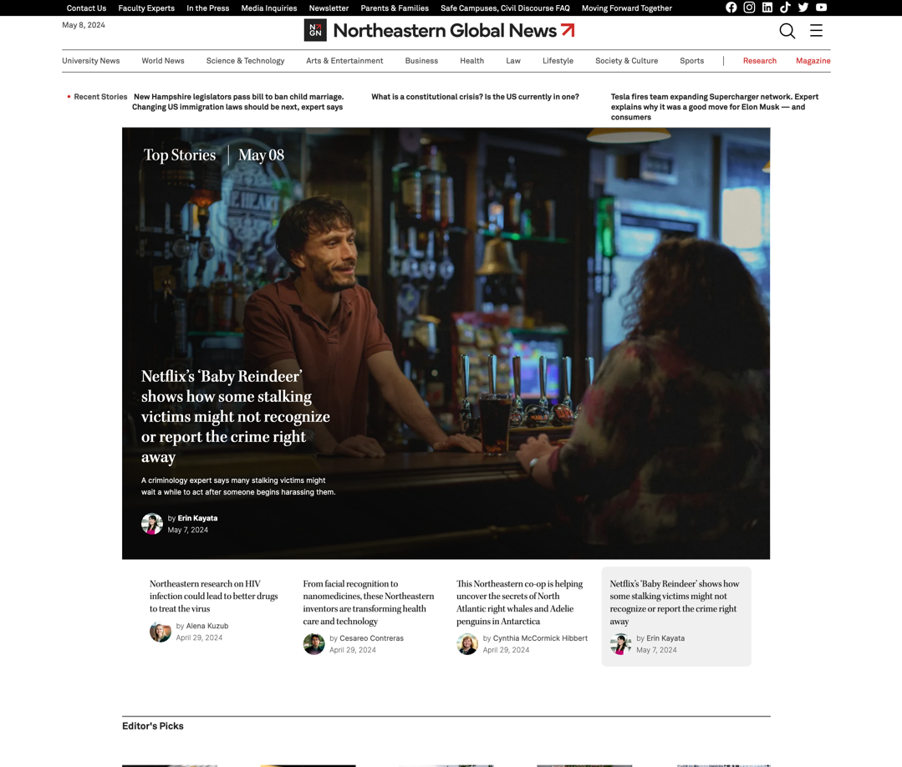
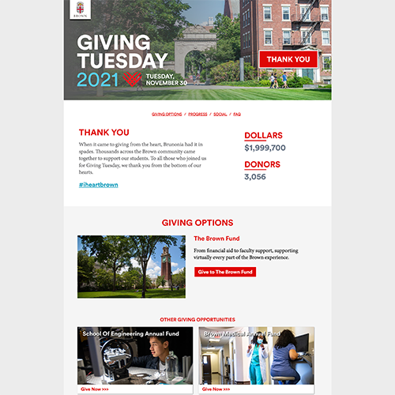
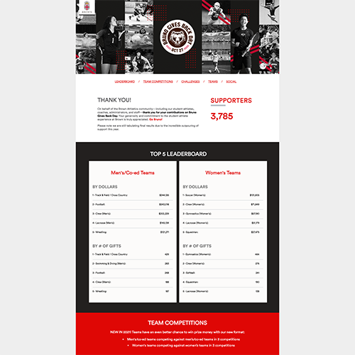
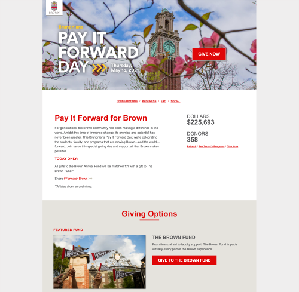
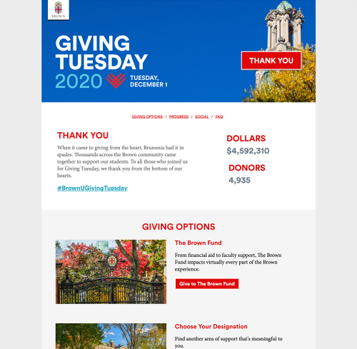
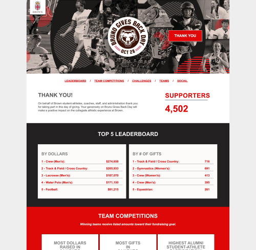
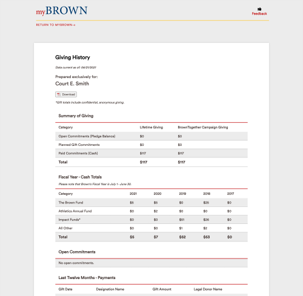

About
I'm Courtney "Court" Ellis Smith, a Web Developer at Northeastern University. I specialize in spinning up sites with semantic HTML5 and creating graceful and fluid mobile-first sites using CSS/Sass. (Like this one!) I love the right brain/left brain of design with front-end development and the challenge of an ever-changing field. On my days off, I enjoy reading, playing video games, ice skating, and exploring. I'm excited to help you bring your ideas to life!
Email me Github LinkedIn
Skills
Computational and Coding
- Semantic HTML5, CSS3 (including animations), Sass, JavaScript, PHP
- Cross-browser, mobile-first, fluid and responsive design for the web with a focus on accessibility
- Agile workflows (Scrum), Jira, Github, Git
- Wordpress, including custom post types, plugins, and blocks
- Drupal, BBIS, and BlackBaud CRM
- Designing, coding, and testing responsive emails that perform in all major clients
- Adobe Target, Illustrator, InDesign, Photoshop, Dreamweaver
Language
- Japanese: Intermediate reading, writing, and speaking
- Spanish: Basic reading and writing
Work
Northeastern University
Northeastern Global News
Northeastern Global News is a daily news site created and maintained by our team. Built in Wordpress, it hosts a decade worth of articles on current news and University happenings. Together with our team of developers, I create custom post types, taxonomies, Gutenberg blocks, and uniquely designed pages to ensure that our content can be accessed around the clock as news breaks. For the homepage specifically, I created the top and side navigations with a nav walker, and created the footer as well.
Brown University
Giving Tuesday 2021
I built the website for Giving Tuesday, which serves as the digital homebase for this fundraising event. The day after Cyber Monday, Giving Tuesday has become a major fundraising day for the university. This year was no exception as it raised nearly $2 million from 3,056 donors. The site itself hosted 4,325 visitors who spent 3 minutes there on average. 48% of them were on mobile.
How I made it happen:
- Interpreted flat designs from the graphics team for a variety of screen sizes
- Built the site out locally in mobile-first, semantic HTML5 and Sass
- Segmented and loaded into our content management system (BBIS)
- Evaluated the style guide for accessibility with color contrast
- Tested locally and in Browserstack
- Served as the primary project manager, ensuring all deliverables arrived in a timely fashion
- Integrated internal and external feedback from critiques
- Connected and assessed real-time charts
- Executed a multi-state launch process with before, during, and after presentations of the site
Bruno Gives Back Day 2021

The Bruno Gives Back Day site I built is especially geared to promote competition across Brown Bears sports teams. This year, we designed the graphs to accentuate the results of the men's versus the women's teams. 3,785 donors supported the Brown Bears on this giving day.
How I made it happen:
- Interpreted flat designs from the graphics team for a variety of screen sizes
- Built out new graphs to spec that are mobile-first and fully fluid
- Coded semantic HTML5 and Sass, creating the mobile-first site locally
- Segmented and loaded into our content management system (BBIS)
- Tested locally and in Browserstack
- Iterated closely with the Sports Foundation team to produce and receive all deliverables (including written content and plugins)
- Integrated internal and external feedback from critiques
- Connected and assessed real-time charts
- Executed a multi-state launch process with before, during, and after presentations of the site
Brunonians Pay It Forward Day 2021

Every spring I build the Brunonians Pay It Forward Day site to spark enthusiasm for this global day of goodwill. Brown leverages the site to drive alumni to "pay it forward" by giving back to support current students. This giving day raised $1.8 million from 1,741 donors. Overall, 2,325 users visited the site.
How I made it happen:
- Interpreted flat designs from the graphics team for a variety of screen sizes
- Developed the site locally in mobile-first, semantic HTML5 and Sass
- Evaluated the style guide for accessibility with color contrast
- Loaded different parts of the code into the content management system, mindful of user access and reusability
- Ran a testing regimen on a variety of devices
- Managed the project to ensure various deliverables from different teams arrived in a timely fashion
- Integrated internal and external feedback from critiques
- Connected and assessed real-time charts
- Executed a multi-state launch process with before, during, and after presentations of the site
Giving Tuesday 2020

Giving Tuesday 2020 raised nearly $4.6 million from 4,935 donors. The website had one of its highest rates of audience penetration, with 4,243 users visiting the site at least once. This achieved the day's goal of engaging more donors than ever before.
How I made it happen:
- Prototyped a condensed, single-page version of the giving day site, reviewed it with graphic design, and devised a development plan to make it reusable going forward
- Interpreted flat designs from the graphics team for a variety of screen sizes
- Developed the site locally in mobile-first, semantic HTML5 and Sass
- Evaluated the style guide for accessibility with color contrast
- Loaded different parts of the code into the content management system, mindful of user access and reusability
- Ran a testing regimen on a variety of devices
- Managed the project to ensure various deliverables from different teams arrived in a timely fashion
- Iterated on internal and external feedback from critiques
- Integrated real-time results charts and social sharing
- Launched the before state early, and managed the on-the-dot switchover for giving day go-live
- Completed the site by activating the day after state
Bruno Gives Back Day 2020

Iterating on last year's design to build brand recognition, the design highlighted competition amongst different Brown Bears teams. The site included multiple phases to build excitement and updating tallies as gifts rolled in. 4,538 supporters gave to their favorite team.
- Interpreted flat designs from the graphics team for a variety of screen sizes
- Coded semantic HTML5 and Sass, creating the mobile-first site locally first
- Segmented and loaded into our content management system (BBIS)
- Ran a testing regimen on a variety of devices
- Iterated closely with the Sports Foundation team to produce and receive all deliverables before they're needed, including written content and plugins
- Integrated internal and external feedback from critiques
- Connected and assessed real-time charts
- Executed a multi-state launch process with before, during, and after presentations of the site
Giving History Page

Having a page where donors could view their giving history had long been an item at the top of our users' wishlist. For this long-desired feature, I wrote the front-end code for a giving history page, allowing each donor to log in and see their support of Brown over the years.
How I made it happen:
- Partnered closely with our back-end developers to ascertain technical requirements
- Designed the page to be elegant, easy to scan, and effective
- Wrote mobile-first, fluid tables that maintained their integrity, design, and readability on any screen size
- Tested and updated based on feedback
- Delivered required code and assets to the developers for full integration
Education
Georgia Institute of Technology
- Bachelor of Science in Computational Media
- Minor in Japanese
Rhode Island School of Design
- Continuting Education Certificate: Interactive Design
- Adobe PhotoShop
- Adobe InDesign
- Web Architecture
- Applied Color
- Interactive Design: Introduction
- Cascading Style Sheets
- Design
- JavaScript
- Digital Design Techniques
- Interactive Design: User Interface